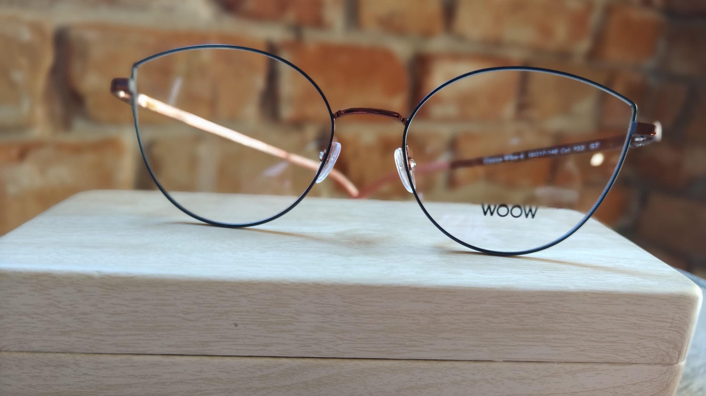
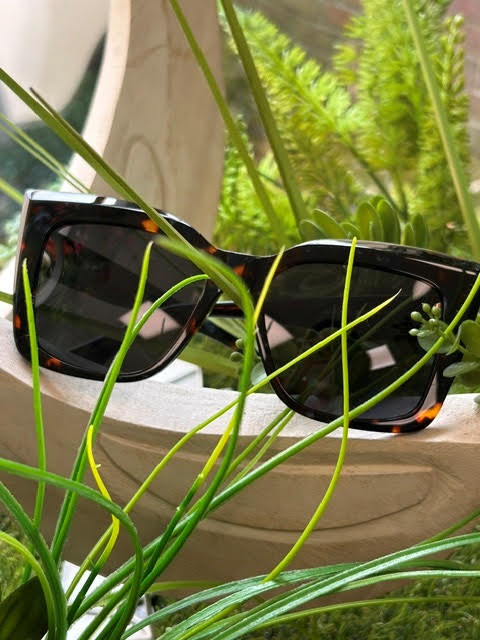
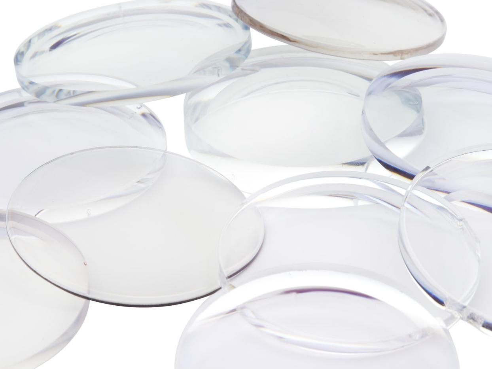

Oferta
Okulary korekcyjne, przeciwsłoneczne i soczewki kontaktowe. Wszystko dobierane na miejscu, po badaniu i przymiarce.

Okulary korekcyjne
Lekkie oprawki i nowoczesne szkła dopasowane do wady oraz trybu życia. Szkła jednoogniskowe, biurowe i progresywne, z powłokami antyrefleksyjnymi i utwardzającymi.
Przy pracy przy ekranie dobieramy szkła z filtrem światła niebieskiego lub osobną parę do biurka — podpowiemy, co w Twoim przypadku ma sens.

Okulary przeciwsłoneczne
Pełna ochrona UV w wydaniu, które nie idzie na kompromis ze stylem. Okulary gotowe oraz wykonane z korekcją, również w wersji polaryzacyjnej — dla kierowców i osób pracujących w silnym słońcu.

Soczewki kontaktowe
Soczewki jednodniowe i miesięczne znanych producentów, wraz z doborem parametrów i nauką bezpiecznego zakładania oraz pielęgnacji.
Do soczewek dobieramy też płyny i akcesoria; przy pierwszym zakupie pokazujemy całą procedurę na miejscu.
Chcesz zobaczyć oprawki na sobie?
Przymiarka nic nie kosztuje i nie zobowiązuje. Wpadnij w godzinach otwarcia albo umów się na spokojny termin.